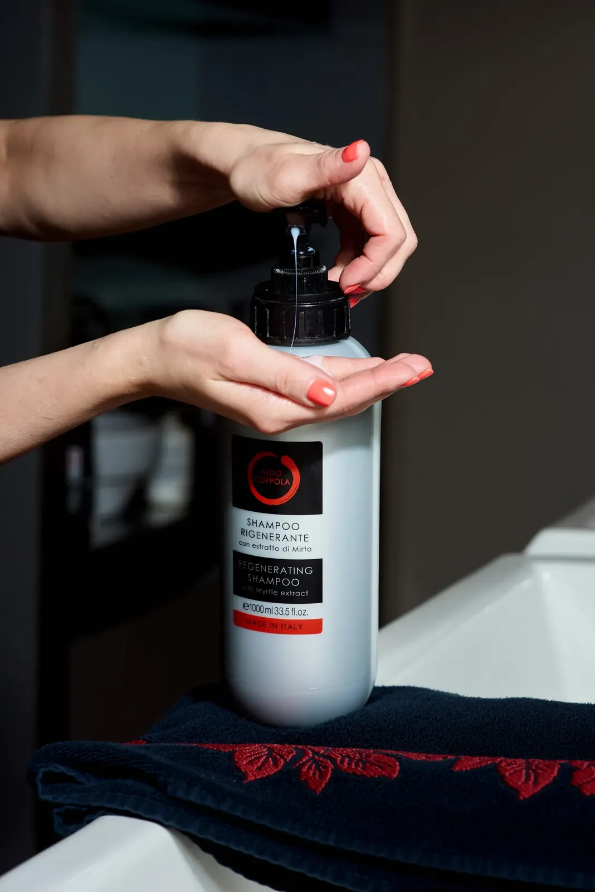

Осветление меняет структуру волоса: чтобы убрать пигмент, осветлитель раскрывает кутикулу. После этого волосы быстрее теряют влагу, легче впитывают всё, что их окружает, и сильнее реагируют на горячий фен. Хорошая новость: правильный уход дома заметно продлевает жизнь блонда.
Почему блонд желтеет
Желтизна появляется по нескольким причинам. Во-первых, тонирование постепенно смывается, и проступает тёплый фон осветлённого волоса. Во-вторых, пористые волосы впитывают соли и металлы из воды, дым, частицы из воздуха. В-третьих, светлые волосы выгорают на солнце и от высоких температур.
Как мыть осветлённые волосы
- Выбирайте шампунь для окрашенных или осветлённых волос: в нём мягче моющие компоненты.
- Мойте кожу головы, а длину — пеной, которая стекает при смывании.
- Вода — тёплая, не горячая.
- После шампуня — кондиционер на длину, особенно на концы.
Маски и уход
Раз в неделю — восстанавливающая маска. Оставьте её на волосах дольше, чем на минуту, как обычно пишут на упаковке: лучше 10–15 минут под тёплым полотенцем. Несмываемый уход на концы помогает защитить их от сухости в отопительный сезон.
Как правильно пользоваться фиолетовым шампунем
Фиолетовый или серебряный шампунь нейтрализует желтизну. Но если пользоваться им каждый раз, блонд потускнеет и может уйти в сероватый оттенок. Достаточно раза в неделю, держать — по инструкции и не дольше. Если желтизна возвращается быстро, это повод прийти на тонирование, а не мыть голову фиолетовым шампунем чаще.

Фен, плойка и утюжок
Осветлённые волосы особенно чувствительны к высоким температурам. Всегда наносите термозащиту, сушите на средней температуре и не задерживайте плойку на одной пряди. Чем реже горячие инструменты, тем дольше держится цвет.
Вода, солнце и зима
- Жёсткая вода оставляет на волосах соли и делает блонд тусклым. Помогает фильтр для душа.
- Летом прячьте волосы от солнца и после бассейна сразу смывайте хлор.
- Зимой волосы страдают от сухого воздуха в квартире и трения о шарфы и воротники. Увлажнитель воздуха и шёлковая наволочка — простые, но действенные помощники.
Когда пора к колористу
- Желтизна вернулась через неделю-две после тонирования.
- Концы стали сухими и путаются.
- Отросли корни и граница стала заметной. Если хотите приходить реже, попросите колориста про шатуш: с ним корни отрастают незаметнее.
Вопросы и ответы
Как часто нужно тонировать блонд?
Зависит от волос и того, как часто вы моете голову. Обычно тонирование освежают между визитами на осветление — колорист подскажет точнее.
Можно ли пользоваться фиолетовым шампунем каждый день?
Нет. Достаточно раза в неделю, иначе блонд может потускнеть и уйти в сероватый оттенок.
Почему блонд желтеет зимой?
Из-за сухого воздуха, жёсткой воды и горячих инструментов. Помогают увлажнение, термозащита и фильтр для воды.